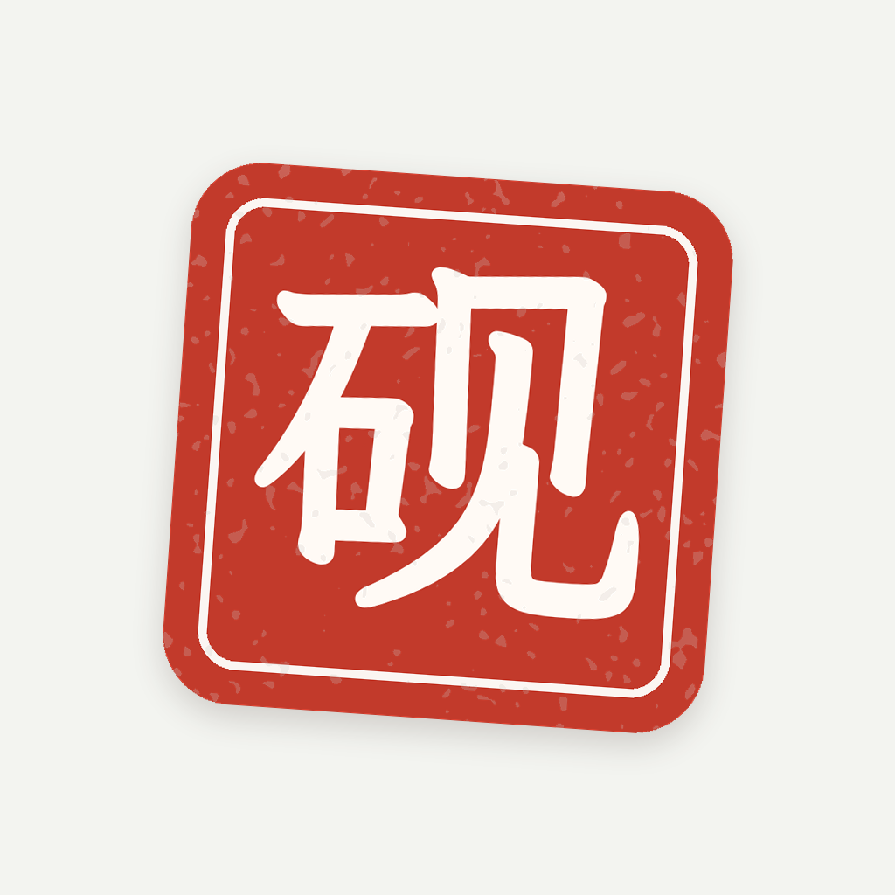

Ink & ToneSupport
Thanks for using Ink & Tone. Here is how to get help.
Common questions
| Question | Answer |
|---|---|
| How do I put a word on my lock screen? | Press and hold the lock screen, tap Customize → Lock Screen, tap the box under the clock and choose Ink & Tone. |
| How do I add home screen widgets? | Press and hold an empty area, tap Edit → Add Widget and search for Ink & Tone. |
| How do I put a word on my watch face? | Touch and hold the watch face, tap Edit, swipe to the complications, tap a spot and choose Ink & Tone. |
| The watch only shows HSK 1 words | Open Ink & Tone on your iPhone once, so it sends your words to the watch. |
| How do I change my word list or level? | Open the Progress tab and tap the gear to open Settings. |
| Can I move my progress to a new phone? | Yes. In Settings, tap Export progress and save the file. On the new phone, tap Import progress. |
| The voice sounds robotic | Download an enhanced Chinese voice in Settings → Accessibility → Spoken Content → Voices → Chinese on your iPhone. |
| Does the app need the internet? | No. Everything works offline. Only buying or restoring Pro needs a connection. |
| What does Pro add? | Every HSK level above 2, the widgets with example sentences (the Sentence lock screen widget and the medium and large home screen widgets with their buttons), and the Apple Watch app with its reviews complication. |
| How do I get Pro back on a new iPhone? | Sign in with the same Apple ID, open Settings → Pro in the app and tap Restore purchases. |
| How do I cancel the yearly plan? | In the app, open Settings → Manage subscription. Or open the iPhone Settings app, tap your name, then Subscriptions. Cancel at least 24 hours before it renews. |
| I bought Pro but the watch is still locked | Open the app on your iPhone once, so it tells the watch. |
Still stuck?
Open an issue on GitHub and describe what happened. Please include your iPhone model, iOS version and app version (shown in Settings → About and data sources).
Our privacy policy explains how your data is handled: the app collects none.